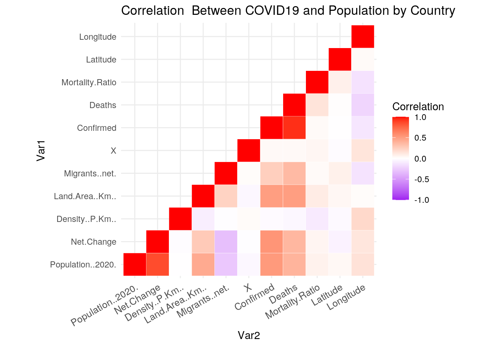
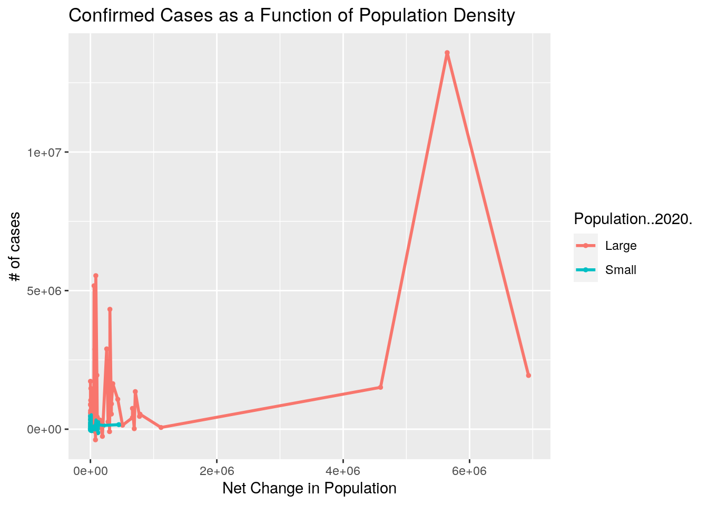
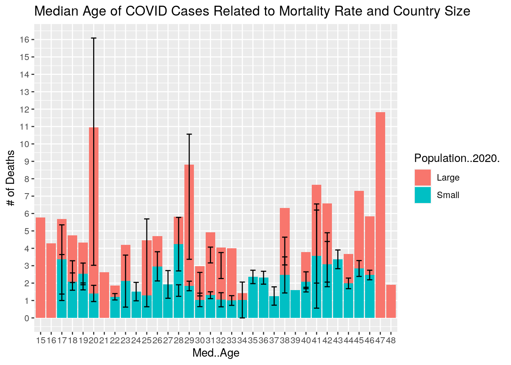
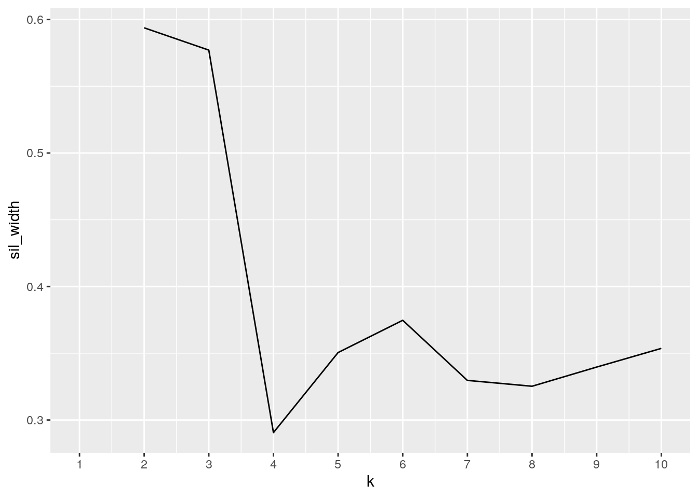
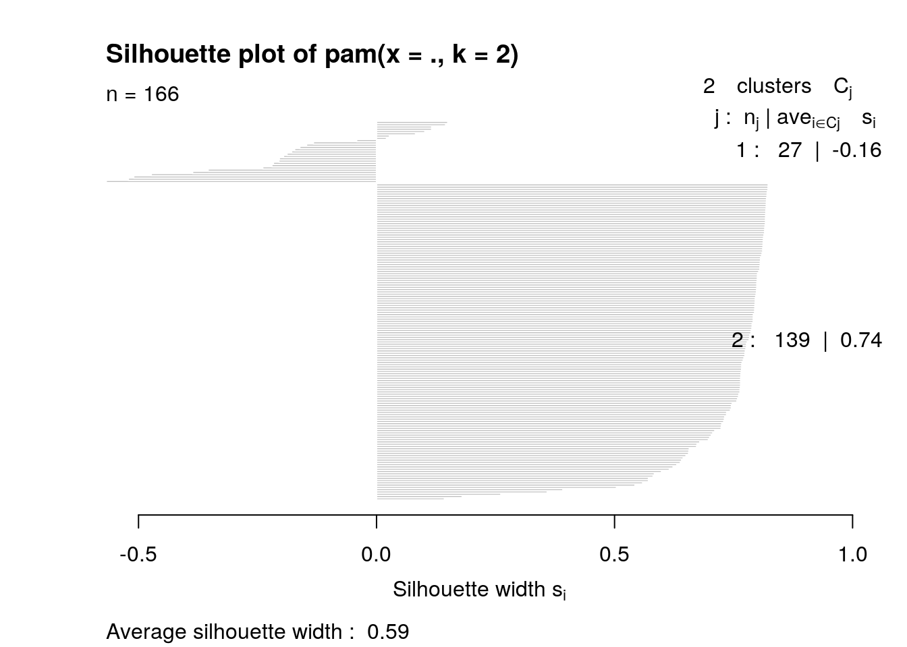
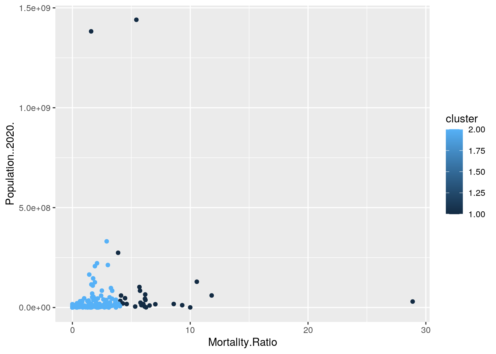
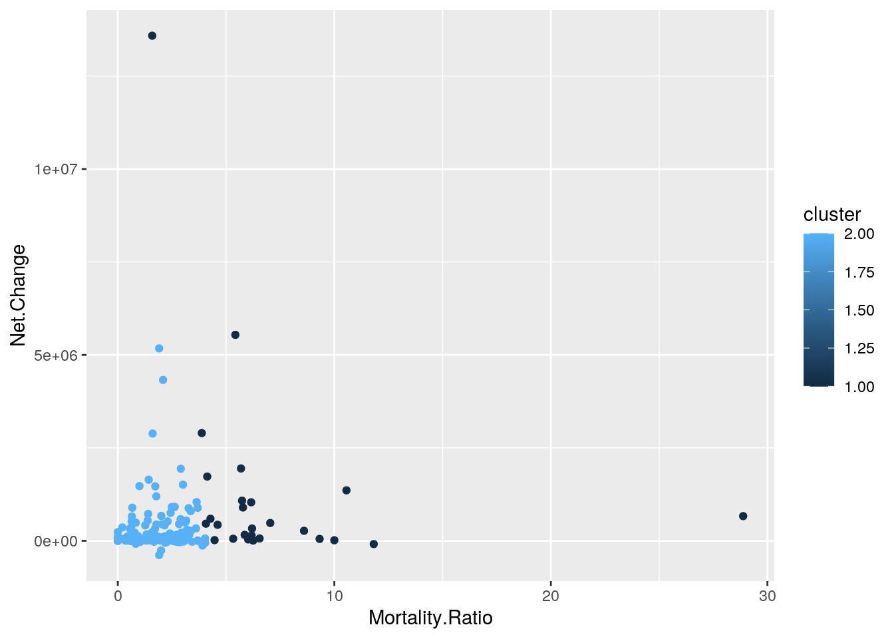
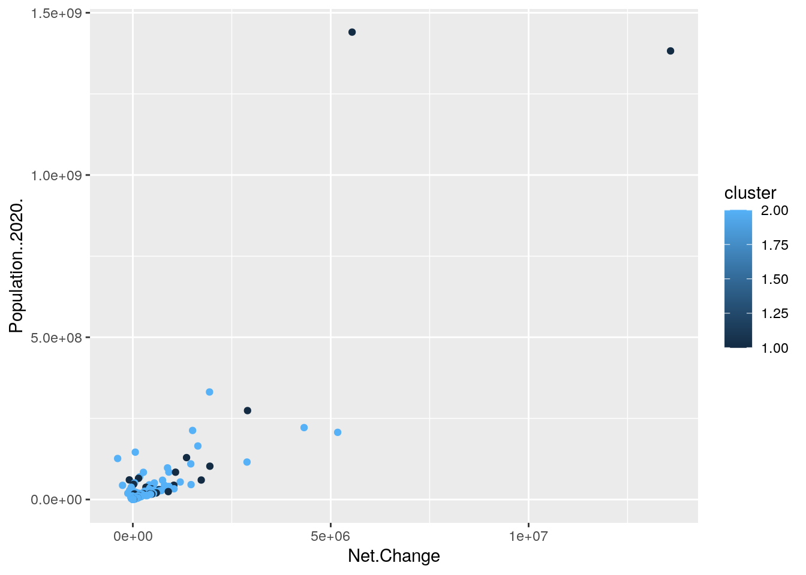

##Julia Dickerson ##jed3458
library(tidyverse)
covid <- read.csv("~/global_covid19_mortality_rates.csv", header = TRUE)
pop <- read.csv("~/population_by_country_2020.csv", header = TRUE)For this project I chose two datasets, the first had information based off of COVID19 statistics that were found in 2020 grouped by country. The other dataset that I used was a dataset that had population information for each country. The COVID dataset was acquired by aggregating three datasets together that contained information on COVID19. The population dataset was downloaded from a site called Worldometer, which provides information on all of the countries in the world. Additionally, they used web scraping techniques to create and tidy the dataset.
The variables within the COVID19 dataset are Deaths from COVID, Confirmed Cases, Mortality Ratio, country, country code, latitude and longitude. The variables that were found in the population dataset were the population of each country, the yearly change, the net change, the density of population per km, the land area, the net migrants, the fertilization rate, the median age, the urban population, and the world share.
The reason that these datasets stood out to me is because it seemed to me that population would have a big impact on how COVID would spread in a country. The variables like Urban population and density of the population seemed as though they would have a positive correlation with COVID cases and deaths. The reason for this is because the more people there are and the more closely they are associated with each other point toward increased COVID cases. Another association I would predict would be that the smaller the population, the less cases there would be because there are simply less people and less chances of transmission. Another association that could occur would be that the more migrants a country has the more likely it is that COVID could be brought into a country.
pop2 <- pop %>% rename(Country = Country..or.dependency.)
fullcovid <- right_join(pop2, covid, ID = "Country")
realcovid <- fullcovid %>% na.omit()
uncommon <- anti_join(pop2, covid)
glimpse(uncommon)## Rows: 64
## Columns: 11
## $ Country <fct> DR Congo, United Kingdom, Myanmar, Côte d'Ivoire, N…
## $ Population..2020. <int> 90003954, 67948282, 54473253, 26486282, 25798588, 1…
## $ Yearly.Change <fct> 3.19 %, 0.53 %, 0.67 %, 2.57 %, 0.44 %, 1.19 %, 0.1…
## $ Net.Change <int> 2770836, 355839, 364380, 661730, 112655, 131612, 19…
## $ Density..P.Km.. <int> 40, 281, 83, 83, 214, 18, 139, 13, 16, 847, 323, 83…
## $ Land.Area..Km.. <int> 2267050, 241930, 653290, 318000, 120410, 610952, 77…
## $ Migrants..net. <dbl> 23861, 260650, -163313, -8000, -5403, -174200, 2201…
## $ Fert..Rate <fct> 6.0, 1.8, 2.2, 4.7, 1.9, 4.7, 1.6, 2.8, 4.5, 3.7, 1…
## $ Med..Age <fct> 17, 40, 29, 19, 35, 19, 43, 27, 19, 21, 44, 39, 21,…
## $ Urban.Pop.. <fct> 46 %, 83 %, 31 %, 51 %, 63 %, 25 %, 74 %, 53 %, 70 …
## $ World.Share <fct> 1.15 %, 0.87 %, 0.70 %, 0.34 %, 0.33 %, 0.14 %, 0.1…dropped <- uncommon %>% select(Country)
glimpse(dropped)## Rows: 64
## Columns: 1
## $ Country <fct> DR Congo, United Kingdom, Myanmar, Côte d'Ivoire, North Korea…In order to join the two datasets I chose to do a right_join because I wanted to keep all of the variables in the COVID dataset and only bring in the information from the population dataset that would correspond to the pre-existing variables in the COVID dataset. More specifically, the population dataset had data on different territories as well as countries, but I only wanted to focus on countries. So, the data that was dropped was the territories in the population dataset as well as countries that did not have the relevant population statistics. This turned out to be 74 variables, including North Korea, Puerto Rico, ect. I also joined the two datasets by country as this was their only variable in common. I also conducted an anti_join to vizualize the countries and territories that were dropped. The issue with these variables being dropped is that it may skew the data to come to one conclusion, like that there is no correlation between variabes, but witht the extra information it could change this.
realcovid %>% group_by(Med..Age) %>% select(Mortality.Ratio) %>%
arrange(desc(Med..Age))## # A tibble: 166 x 2
## # Groups: Med..Age [34]
## Med..Age Mortality.Ratio
## <fct> <dbl>
## 1 48 1.91
## 2 47 11.8
## 3 46 3.38
## 4 46 2.19
## 5 46 2.74
## 6 45 4.47
## 7 45 2.06
## 8 45 4.04
## 9 45 2.21
## 10 45 3.05
## # … with 156 more rowsrealcovid %>% group_by(Med..Age) %>% select(Mortality.Ratio) %>%
arrange(desc(Mortality.Ratio))## # A tibble: 166 x 2
## # Groups: Med..Age [34]
## Med..Age Mortality.Ratio
## <fct> <dbl>
## 1 20 28.9
## 2 47 11.8
## 3 29 10.6
## 4 28 10
## 5 42 9.32
## 6 28 8.6
## 7 17 7.04
## 8 41 6.55
## 9 28 6.25
## 10 41 6.2
## # … with 156 more rowsrealcovid %>% group_by(Country) %>% summarise(Confirmed) %>%
arrange(desc(Confirmed))## # A tibble: 166 x 2
## Country Confirmed
## <fct> <dbl>
## 1 United States 6933548
## 2 India 5646010
## 3 Brazil 4591364
## 4 Russia 1117487
## 5 Colombia 784268
## 6 Peru 776546
## 7 Mexico 710049
## 8 Spain 693556
## 9 South Africa 665188
## 10 Argentina 664799
## # … with 156 more rowsrealcovid %>% group_by(Country) %>% summarise(Density..P.Km..) %>%
arrange(desc(Density..P.Km..))## # A tibble: 166 x 2
## Country Density..P.Km..
## <fct> <int>
## 1 Singapore 8358
## 2 Hong Kong 7140
## 3 Bahrain 2239
## 4 Maldives 1802
## 5 Malta 1380
## 6 Bangladesh 1265
## 7 Taiwan 673
## 8 Barbados 668
## 9 Lebanon 667
## 10 Mauritius 626
## # … with 156 more rowsrealcovid %>% filter(Country == "Singapore") %>% select(Confirmed,
Population..2020.)## Confirmed Population..2020.
## 1 57639 585832257639/5858322## [1] 0.009838824realcovid %>% filter(Country == "United States") %>% select(Confirmed,
Mortality.Ratio)## Confirmed Mortality.Ratio
## 1 6933548 2.91mutated <- realcovid %>% mutate(propotion_death = Population..2020. *
Mortality.Ratio/100)
glimpse(mutated)## Rows: 166
## Columns: 19
## $ Country <fct> China, India, United States, Indonesia, Pakistan, B…
## $ Population..2020. <int> 1440297825, 1382345085, 331341050, 274021604, 22161…
## $ Yearly.Change <fct> 0.39 %, 0.99 %, 0.59 %, 1.07 %, 2.00 %, 0.72 %, 2.5…
## $ Net.Change <int> 5540090, 13586631, 1937734, 2898047, 4327022, 15098…
## $ Density..P.Km.. <int> 153, 464, 36, 151, 287, 25, 226, 1265, 9, 66, 347, …
## $ Land.Area..Km.. <int> 9388211, 2973190, 9147420, 1811570, 770880, 8358140…
## $ Migrants..net. <dbl> -348399, -532687, 954806, -98955, -233379, 21200, -…
## $ Fert..Rate <fct> 1.7, 2.2, 1.8, 2.3, 3.6, 1.7, 5.4, 2.1, 1.8, 2.1, 1…
## $ Med..Age <fct> 38, 28, 38, 30, 23, 33, 18, 28, 40, 29, 48, 19, 26,…
## $ Urban.Pop.. <fct> 61 %, 35 %, 83 %, 56 %, 35 %, 88 %, 52 %, 39 %, 74 …
## $ World.Share <fct> 18.47 %, 17.70 %, 4.25 %, 3.51 %, 2.83 %, 2.73 %, 2…
## $ X <int> 34, 72, 167, 73, 121, 23, 118, 13, 131, 105, 80, 52…
## $ Confirmed <dbl> 85314, 5646010, 6933548, 257388, 308217, 4591364, 5…
## $ Deaths <dbl> 4634, 90020, 201884, 9977, 6437, 138105, 1102, 5044…
## $ Mortality.Ratio <dbl> 5.43, 1.59, 2.91, 3.88, 2.09, 3.01, 1.91, 1.43, 1.7…
## $ Latitude <dbl> 35.861660, 20.593684, 37.090240, -0.789275, 30.3753…
## $ Longitude <dbl> 104.195397, 78.962880, -95.712891, 113.921327, 69.3…
## $ Country_Code <fct> CN, IN, US, ID, PK, BR, NG, BD, RU, MX, JP, ET, PH,…
## $ propotion_death <dbl> 78208171.9, 21979286.9, 9642024.6, 10632038.2, 4631…When using the dplyr functions, I first grouped by median age and then selected for Mortality Ratio. I did this with the idea in mind that countries with older populations would have higher mortality rates, however when looking at the data generated. This was not the case. When it was arranged by descending median age it was found that all of the highest ages had relatively low mortality rates. This indicates that another factor may be in play. Also, when arranged by descending mortality ratio, it was found that although there were older populations with high mortality rates, there were also younger populations who had just as high if not higher mortality rates.
I then grouped by country and arranged the data by descending Confirmed cases. I did this in order to visualize what countries were leading in COVID cases. The country with the most cases was the United States, and the next highest was India.I was thinking that the countries with the highest number of cases would also have the highest population density. I also summarized the data by descending population density when grouped by country and found that Singapore had the highest density. Then I filtered the data to only include Signapore and selected the confirmed cases and the population. I found that only about 0.9% of the population of Singapore was confirmed to have COVID even with the highest population density. Lastly, I looked back at the US by filtering the data and selecting the Confirmed cases and the mortality rate. Because the US has a high Confirmed cases variable, it would have made sense if the mortality rate was also high, but it was actually only about 2.91%. This may be due to other factors like quality of healthcare.
The last function I did was to add a column to the dataset by using mutate to add a column that multipled the population of the countries by the mortality rate. I did this in order to showcase that if everyone in the country got COVID, then this would be the expected deaths due to the infection.
fakecovid <- fullcovid %>% na.omit()
fakecovid$Population..2020.[realcovid$Population..2020. <= 19999999] <- "Small"
fakecovid$Population..2020.[realcovid$Population..2020. >= 2e+07] <- "Large"
fakecovid %>% group_by(Population..2020. == "Small") %>% summarise(mean(Mortality.Ratio))## # A tibble: 2 x 2
## `Population..2020. == "Small"` `mean(Mortality.Ratio)`
## <lgl> <dbl>
## 1 FALSE 3.52
## 2 TRUE 2.24fakecovid %>% group_by(Population..2020. == "Large") %>% summarise(mean(Confirmed))## # A tibble: 2 x 2
## `Population..2020. == "Large"` `mean(Confirmed)`
## <lgl> <dbl>
## 1 FALSE 31144.
## 2 TRUE 504137.fakecovid %>% group_by(Population..2020. == "Large") %>% summarize(mean(as.numeric(Med..Age)))## # A tibble: 2 x 2
## `Population..2020. == "Large"` `mean(as.numeric(Med..Age))`
## <lgl> <dbl>
## 1 FALSE 17.2
## 2 TRUE 15.6fakecovid %>% group_by(Population..2020. == "Large") %>% summarize(mean(as.numeric(Urban.Pop..)))## # A tibble: 2 x 2
## `Population..2020. == "Large"` `mean(as.numeric(Urban.Pop..))`
## <lgl> <dbl>
## 1 FALSE 46.0
## 2 TRUE 43.4fakecovid %>% summarise(max(Deaths))## max(Deaths)
## 1 201884fakecovid %>% summarise(min(Deaths))## min(Deaths)
## 1 0fakecovid %>% group_by(Country) %>% filter(Deaths == "0") %>%
summarise(Deaths, Population..2020.)## # A tibble: 9 x 3
## Country Deaths Population..2020.
## <fct> <dbl> <chr>
## 1 Bhutan 0 Small
## 2 Cambodia 0 Small
## 3 Eritrea 0 Small
## 4 Grenada 0 Small
## 5 Laos 0 Small
## 6 Mongolia 0 Small
## 7 Saint Lucia 0 Small
## 8 Seychelles 0 Small
## 9 Timor-Leste 0 SmallHere, I dichotamized the Population variable to make it categorical. Small countries were defined as having a population under 20 million and large countries were defined as having a population of over 20 million. I then used summarize and group to find the mean, sd, min, max of some of the variables just for better visualization. With this, I found that there were countries that had zero deaths from COVID (the min was 0 found by the summarize function), and so then I filtered the data for countries that had zero deaths, and found that there were 9 countries that had not had any deaths from COVID; Bhatan, Cambodia, Eritrea, Grenada, Laos, Mongolia, St. Lucia, Seychelles, and Timor-Leste. Interestingly, they were all small countries.
##Summary Statistic Tables
fakecovid %>% summarize_if(is.numeric, list(mean = mean, sd = sd,
min = min, max = max, n_distinct = n_distinct))## Net.Change_mean Density..P.Km.._mean Land.Area..Km.._mean Migrants..net._mean
## 1 461107.2 257.4759 749056.7 1078.964
## X_mean Confirmed_mean Deaths_mean Mortality.Ratio_mean Latitude_mean
## 1 87.51807 187858.5 5603.476 2.667892 19.72125
## Longitude_mean Net.Change_sd Density..P.Km.._sd Land.Area..Km.._sd
## 1 19.5433 1307960 879.5998 1967662
## Migrants..net._sd X_sd Confirmed_sd Deaths_sd Mortality.Ratio_sd
## 1 132665.1 51.40047 783952.3 21441.21 2.911636
## Latitude_sd Longitude_sd Net.Change_min Density..P.Km.._min
## 1 23.87315 59.75361 -383840 2
## Land.Area..Km.._min Migrants..net._min X_min Confirmed_min Deaths_min
## 1 300 -653249 0 10 0
## Mortality.Ratio_min Latitude_min Longitude_min Net.Change_max
## 1 0 -40.90056 -106.3468 13586631
## Density..P.Km.._max Land.Area..Km.._max Migrants..net._max X_max
## 1 8358 16376870 954806 175
## Confirmed_max Deaths_max Mortality.Ratio_max Latitude_max Longitude_max
## 1 6933548 201884 28.88 64.96305 179.4144
## Net.Change_n_distinct Density..P.Km.._n_distinct Land.Area..Km.._n_distinct
## 1 166 121 166
## Migrants..net._n_distinct X_n_distinct Confirmed_n_distinct Deaths_n_distinct
## 1 135 166 163 141
## Mortality.Ratio_n_distinct Latitude_n_distinct Longitude_n_distinct
## 1 137 166 166table1 <- fakecovid %>% summarize_if(is.numeric, list(mean = mean,
sd = sd, min = min, max = max, n_distinct = n_distinct))
print(table1)## Net.Change_mean Density..P.Km.._mean Land.Area..Km.._mean Migrants..net._mean
## 1 461107.2 257.4759 749056.7 1078.964
## X_mean Confirmed_mean Deaths_mean Mortality.Ratio_mean Latitude_mean
## 1 87.51807 187858.5 5603.476 2.667892 19.72125
## Longitude_mean Net.Change_sd Density..P.Km.._sd Land.Area..Km.._sd
## 1 19.5433 1307960 879.5998 1967662
## Migrants..net._sd X_sd Confirmed_sd Deaths_sd Mortality.Ratio_sd
## 1 132665.1 51.40047 783952.3 21441.21 2.911636
## Latitude_sd Longitude_sd Net.Change_min Density..P.Km.._min
## 1 23.87315 59.75361 -383840 2
## Land.Area..Km.._min Migrants..net._min X_min Confirmed_min Deaths_min
## 1 300 -653249 0 10 0
## Mortality.Ratio_min Latitude_min Longitude_min Net.Change_max
## 1 0 -40.90056 -106.3468 13586631
## Density..P.Km.._max Land.Area..Km.._max Migrants..net._max X_max
## 1 8358 16376870 954806 175
## Confirmed_max Deaths_max Mortality.Ratio_max Latitude_max Longitude_max
## 1 6933548 201884 28.88 64.96305 179.4144
## Net.Change_n_distinct Density..P.Km.._n_distinct Land.Area..Km.._n_distinct
## 1 166 121 166
## Migrants..net._n_distinct X_n_distinct Confirmed_n_distinct Deaths_n_distinct
## 1 135 166 163 141
## Mortality.Ratio_n_distinct Latitude_n_distinct Longitude_n_distinct
## 1 137 166 166table2 <- fakecovid %>% group_by(Population..2020.) %>% select(Density..P.Km..,
Confirmed) %>% summarise_if(is.numeric, list(mean = mean,
sd = sd, min = min, max = max, n_distinct = n_distinct))
print(table2)## # A tibble: 2 x 11
## Population..202… Density..P.Km..… Confirmed_mean Density..P.Km..… Confirmed_sd
## <chr> <dbl> <dbl> <dbl> <dbl>
## 1 Large 152. 504137. 207. 1311103.
## 2 Small 310. 31144. 1064. 56615.
## # … with 6 more variables: Density..P.Km.._min <int>, Confirmed_min <dbl>,
## # Density..P.Km.._max <int>, Confirmed_max <dbl>,
## # Density..P.Km.._n_distinct <int>, Confirmed_n_distinct <int>Here, I used the summarize_if function in order to group all of the numeric variables into a table, and then took the mean, standard deviation, minimum, maximum, and the distinct values in those variables. The Net change was 461107.2 meaning that on average each country is increasing/decreasing by this amount. It was also found that the average amount of migrants was 1078.964, meaning that there are 1078.964 different instances in which COVID could be introduced to a country. The confirmed cases mean was 187858.5. The mean of deaths was 5603.476. Comparing the last two statistics, it seems that the average resilience of the populations on average is pretty strong. The stadard deviations were as follows; 1307960 (net change), 879.5998 (Density of population), 1967662 (land area), 132665.1 (migrants), 783952.3 (Confirmed), 21441.21 (deaths), and 2.911636 (Mortality.Ratio). This is all just the variation from the average. The minimum Net change was -383840, meaning that the population is decreasing and the maximum was 13586631, which indicates a growing country, and a growing risk for COVID. The maximum confirmed cases was 6933548 and the maximum deaths was 201884, which indicates that the mortality rate is not high mostly. However, the maximum mortality rate was found to be 28.88%, which shows that there are other factors other than population that affect the mortality rate that should be explored.
In the second table, which was created by grouping by country size and summarizing the mean, sd, max, min, and n_distinct for density of population and confirmed cases. This was made in order to see if there was a correlation between the three factors. Large countries actually had a smaller mean density than did small countries, which makes sense because small countries have less land, but the larger counties had more confirmed cases than the smaller countires. It would need to be looked into further to find the exact effect of population density on the COVID cases. This trend continued when looking at the min, max, and sd.
table2 %>% pivot_longer(contains("_")) %>% separate(name, into = c("Statistic",
"Summary"), sep = "_") %>% pivot_wider(names_from = "Statistic",
values_from = "value")## # A tibble: 10 x 4
## Population..2020. Summary Density..P.Km.. Confirmed
## <chr> <chr> <dbl> <dbl>
## 1 Large mean 152. 504137.
## 2 Large sd 207. 1311103.
## 3 Large min 3 509
## 4 Large max 1265 6933548
## 5 Large n 49 54
## 6 Small mean 310. 31144.
## 7 Small sd 1064. 56615.
## 8 Small min 2 10
## 9 Small max 8358 449903
## 10 Small n 89 109table3 <- table2 %>% pivot_longer(contains("_")) %>% separate(name,
into = c("Statistic", "Summary"), sep = "_") %>% pivot_wider(names_from = "Statistic",
values_from = "value")I chose to tidy table 2 to make it longer. In order to do this I used the function, pivot_longer, which separated the variable (density or confirmed) from the type of summary statistic that each described. With this, there was a column with the variables and a column with the name of the summary statistics. I then used pivot_wider in order to move the variable column to correspond to the column name of the actual values. This left the table with a column for the name of the summary statistics, the population density, and the confirmed cases. The last two column hold the values of the summary statistics.
cormat <- realcovid %>% select_if(is.numeric) %>% cor(use = "everything")
library(reshape2)
get_upper_tri <- function(cormat) {
cormat[lower.tri(cormat)] <- NA
return(cormat)
}
upper_tri <- get_upper_tri(cormat)
melted <- melt(upper_tri, na.rm = TRUE)
library(ggplot2)
ggplot(data = melted, aes(Var2, Var1, fill = value)) + geom_tile(color = "white") +
scale_fill_gradient2(low = "purple", high = "red", mid = "white",
midpoint = 0, limit = c(-1, 1), space = "Lab", name = "Correlation") +
theme_minimal() + theme(axis.text.x = element_text(angle = 30,
vjust = 1, size = 10, hjust = 1)) + coord_fixed() + ggtitle("Correlation Between COVID19 and Population by Country") Here is the heatmap that shows the correlation between different numeric variables. Net change had a high correlation with the population number, which makes sense becuase it directly affects the population. Confirmed and Population seemed to have a solid correlation as well as confirmed had a solid correlation with Net change. This makes sense because the population number is heavily involved with how much COVID can be transmitted. Confirmed also had a solid correlation with Migrants which means that the more migrants there are, it is observed that there are more confirmed cases. One area that was surprising was that appeared that there was no correlation between death and population density and no correlation between death and population density. This is surprising because I was think that as people are closer together, then COVID would have a greater ability to transmit, however this is not reflected in the data.
ggplot(data = fakecovid, aes(x = Confirmed, y = Net.Change, color = Population..2020.)) +
geom_point(size = 1) + ggtitle("Confirmed Cases as a Function of Population Density") +
xlab("Net Change in Population") + ylab("# of cases") + theme(legend.position = "right") +
geom_line(aes(group = Population..2020.), size = 1) This plot shows the net chang in population as a function of number of cases, grouped by size of the country. From this graph it can be seen that the population of larger countries changes more dramatically than smaller countries and that these larger countries also have more confirmed cases. This would make sense because if there is a positive net influx of people into a country that is large, then with more people, there are more possible ways to transmit COVID. On the other hand, the smaller countries have a more stable population and less confirmed cases.
ggplot(data = fakecovid, aes(x = Med..Age, y = Mortality.Ratio,
fill = Population..2020.)) + geom_bar(stat = "summary", fun = mean) +
geom_errorbar(stat = "summary", width = 0.5) + ggtitle("Median Age of COVID Cases Related to Mortality Rate and Country Size") +
ylab("# of Deaths") + scale_y_continuous(breaks = seq(from = 0,
to = 20, by = 1)) + scale_fill_discrete() This graph shows the relationship between the median age of a country, the number of cases, and the size of the country. This graph shows that larger countries have more deaths, and smaller countries have less deaths. Additionally, that large countries and small countries have a pretty wide distribution of median age, which does not appear to have any effect on the number of deaths.
library(cluster)
pam3 <- realcovid %>% select(Mortality.Ratio, Population..2020.,
Net.Change) %>% scale
sil_width <- vector()
for (i in 2:10) {
pam_fit <- pam(pam3, k = i)
sil_width[i] <- pam_fit$silinfo$avg.width
}
ggplot() + geom_line(aes(x = 1:10, y = sil_width)) + scale_x_continuous(name = "k",
breaks = 1:10)
pam2 <- realcovid %>% select(Mortality.Ratio, Population..2020.,
Net.Change) %>% scale %>% pam(2)
pam2## Medoids:
## ID Mortality.Ratio Population..2020. Net.Change
## 36 36 1.2131011 -0.04600185 -0.09939151
## 79 79 -0.2671665 -0.21505688 -0.26923994
## Clustering vector:
## 1 2 3 4 5 6 7 8 9 10 11 12 13 14 15 16 17 18 19 20
## 1 1 2 1 2 2 2 2 2 1 2 2 2 1 2 2 1 2 2 1
## 21 22 23 24 25 26 27 28 29 30 31 32 33 34 35 36 37 38 39 40
## 1 1 2 2 2 2 1 2 2 2 1 2 2 2 2 1 2 2 2 1
## 41 42 43 44 45 46 47 48 49 50 51 52 53 54 55 56 57 58 59 60
## 2 2 2 2 1 2 2 2 2 2 1 2 2 2 1 2 2 2 2 2
## 61 62 63 64 65 66 67 68 69 70 71 72 73 74 75 76 77 78 79 80
## 2 1 1 1 2 2 1 2 2 2 2 2 2 2 1 1 2 2 2 2
## 81 82 83 84 85 86 87 88 89 90 91 92 93 94 95 96 97 98 99 100
## 2 2 2 1 2 2 2 2 2 2 2 2 2 2 2 2 2 2 2 2
## [ reached getOption("max.print") -- omitted 66 entries ]
## Objective function:
## build swap
## 0.7243970 0.7187608
##
## Available components:
## [1] "medoids" "id.med" "clustering" "objective" "isolation"
## [6] "clusinfo" "silinfo" "diss" "call" "data"plot(pam2, which = 2)
library(GGally)
yay <- realcovid %>% select(Mortality.Ratio, Population..2020.,
Net.Change) %>% mutate(cluster = pam2$clustering)
ggplot(yay, aes(x = Mortality.Ratio, y = Population..2020., color = cluster)) +
geom_point()
ggplot(yay, aes(x = Mortality.Ratio, y = Net.Change, color = cluster)) +
geom_point()
ggplot(yay, aes(x = Net.Change, y = Population..2020., color = cluster)) +
geom_point()
The first chunk of code was used in order to find the silhouette width, which is the how close together the variables are and how separated the clusters are. The ggplot generates a graph with sil_widths on it for different numbers of clusters. The clusters with the highest sil_width are the most separated with the points within them being very close. For the three variables used (mortality rate, population, and net change), the highest sil_width was found at 2 clusters, meaning this is the ideal number of clusters for the data.
Then, through the use of pam, the two clusters were formed, and a plot was generated in order to assess the strength of the associations. This number was found to be 0.59, which indicates that a reasonable structure has been found (goodness of fit). Then, the different variables were plotted against each other in their clusters and it allows the clusters to be characterized. The light blue cluster has a smaller mortality rate, a larger net change, and almost the same population as the other cluster. The dark blue cluster has about the same population size as teh other cluster, a larger mortality rate, and a smaller net change. These were found from the ggplots.
## paste this chunk into the ```{r setup} chunk at the top of
## your project 1 .Rmd file
knitr::opts_chunk$set(echo = TRUE, eval = TRUE, fig.align = "center",
warning = F, message = F, tidy = TRUE, tidy.opts = list(width.cutoff = 60),
R.options = list(max.print = 100))…